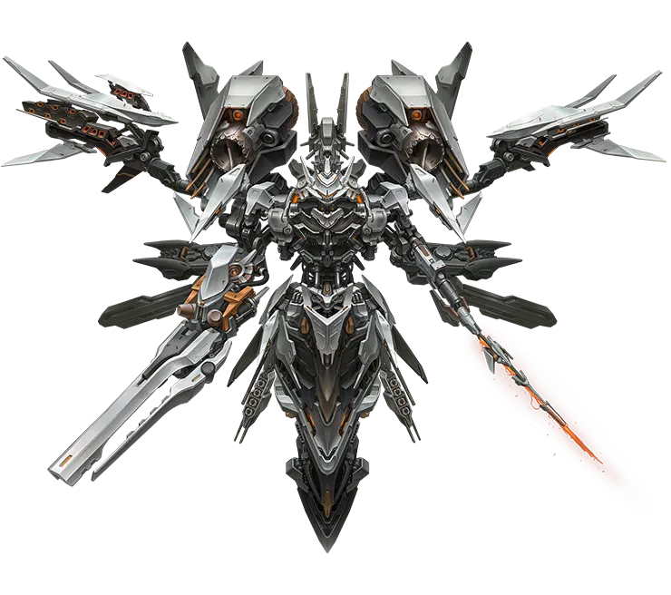
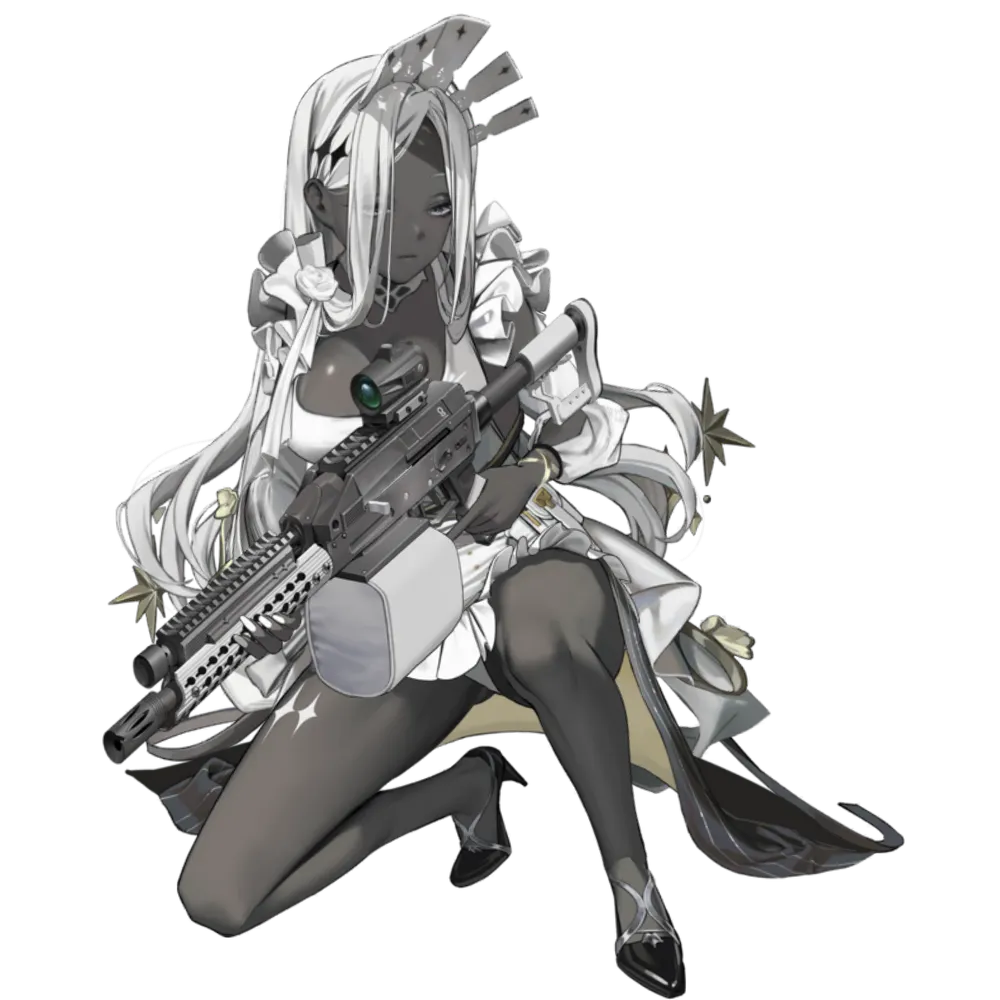
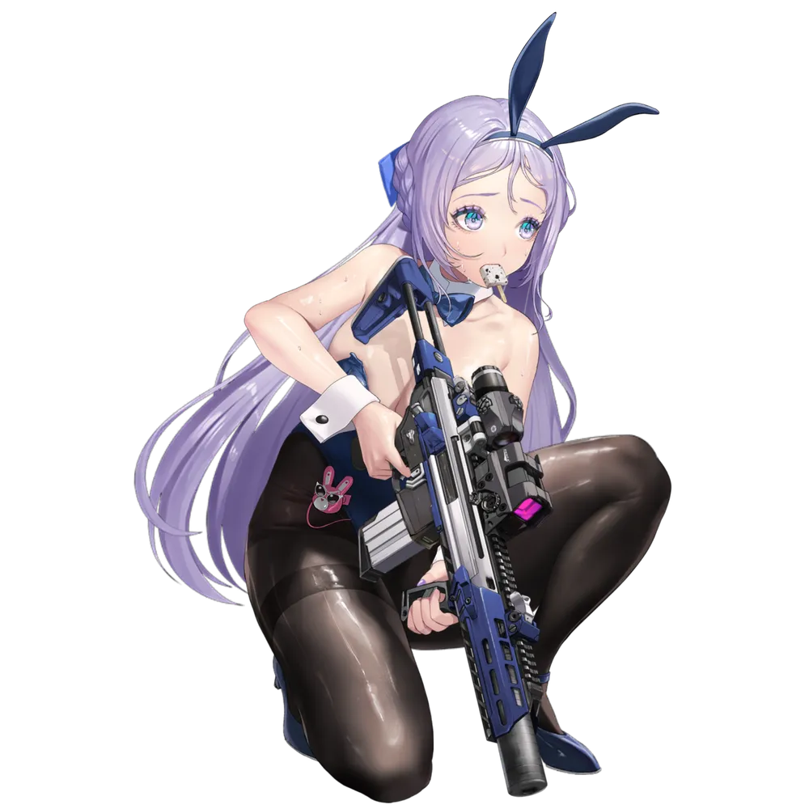
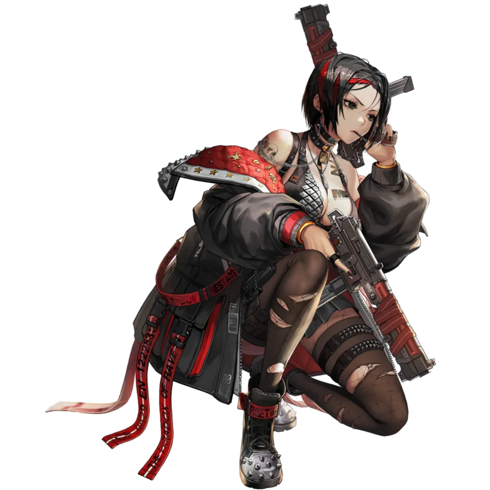
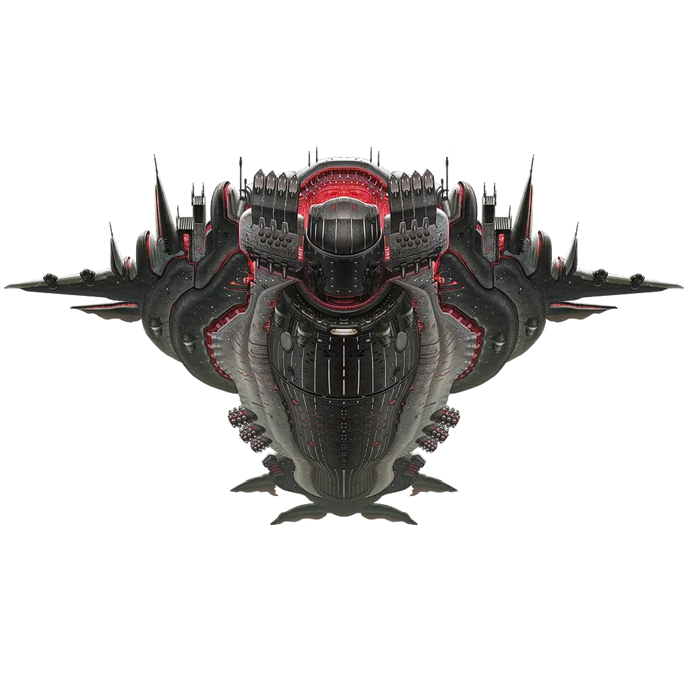
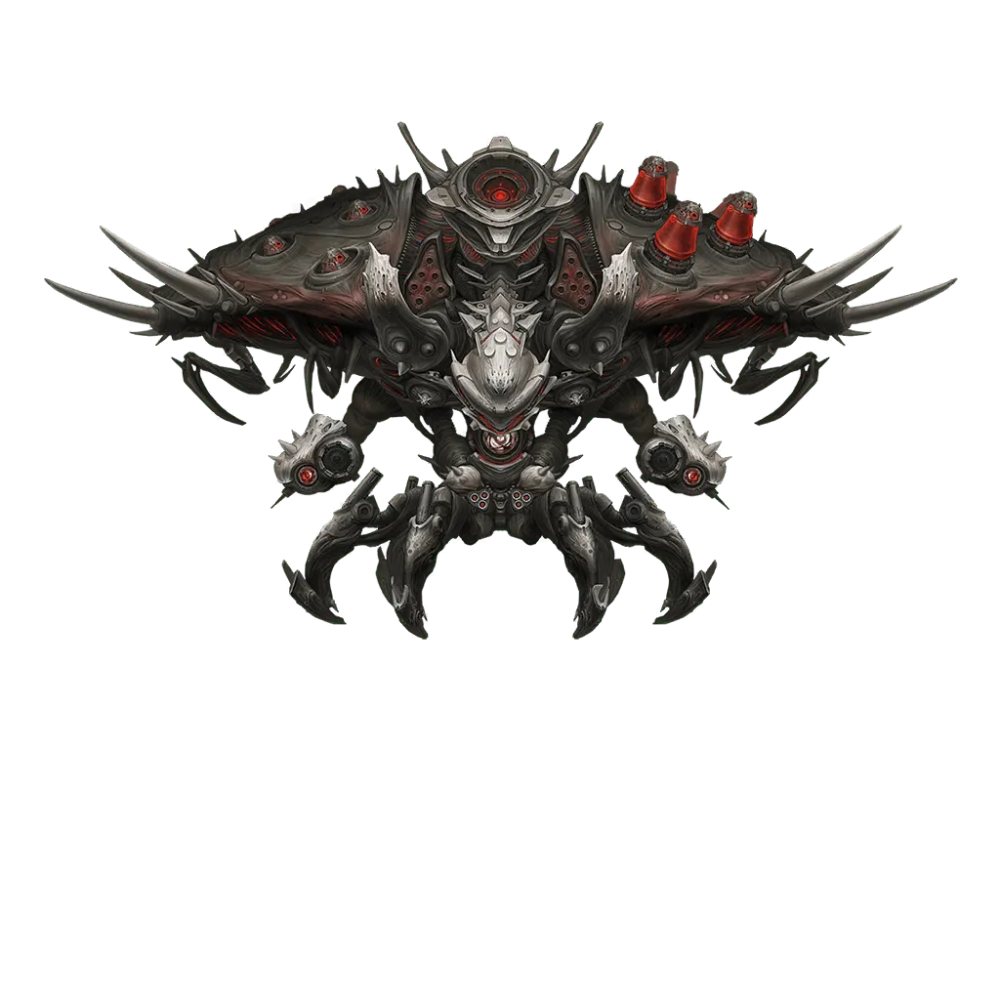
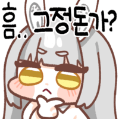

[시리즈] 니할배가 들려주는 그 시절 니케 이야
· 니할배가 들려주는 그 시절 니케 이야기(3) [레이드편] · 니할배가 들려주는 그 시절 니케 이야기(2) [괴담편]
· 니할배가 들려주는 그 시절 니케 이야기 [니케편]
오늘은 그 시절 악몽같던 레이드 보스들에 대해서 알아볼려한다
지금은 워낙 니케풀이 넓어져서 레이드가 유사 딜딸 샌드백으로 변했지만
옛날에는 별 지랄맞은 보스들을 기상천외한 조합으로 때려야했다
1. 모더니아

니케의 첫 유니온 레이드에서 5번째 보스였던 모더니아다
특특요만 주구장창 돌리는 니청년과 할배들은 기억이 안 날 수도 있지만
우리 모두 특요에서 모더니아가 나올 때 코어를 빠르게 부숴야지 레이저 패턴을 스킵할 수 있다는 것을 알고 있을 것이다
이 첫 번째 유레에서 나온 모더니아도 거의 패턴이 똑같았다 딱 하나의 문제 빼고
코어가 미치도록 단단했다
레이저를 안 쳐맞을려고 코어를 존나 때려도 어지간히 성장이 잘 된 상태가 아니라면 코어를 빠르게 못 부쉈기에
레이저를 최소 2번은 쳐맞았다
모더니아 레이저를 맞으면 기절 + 뼈가 녹는 데미지 때문에 딜딸은 커녕 완주하는거 자체가 힘들었다
그래서 사람들은 완주를 목표로 지금 보면 어이가 없을 정도의 니케풀을 가지고 연구를 하기 시작하고
결국에 방법을 찾아냈다


아리아와 폴크방은 지금 시점에서는 애장품을 줘도 구제가 가능할지 의문이 드는 성능의 니케이지만
당시 주목 받은 점은 상당히 두꺼운 쉴드를 아군에게 부여할 수 있다는 것이었다
코어를 못 부숴서 레이저를 쳐맞고 죽네? 코어를 부술 딜을 늘려야겠삼 (X)
코어를 못 부숴서 레이저를 쳐맞고 죽네? 그럼 레이저를 쳐맞아도 안 죽으면 되는거 아님? (O)
대충 이런 논리였다
아리아와 폴크방으로 보호막을 아군에게 씌워 레이저를 쳐맞고 추가타를 쳐맞아도 안 죽고
꾸역꾸역 살아가 코어를 부수는 것이 택틱이었다
위 논리에 기반해 놀랍게도 이딴 니케도 쓰였다

크로우의 스킬1은 풀버시 적 공격력을 깎는 스킬인데
이걸로 모더니아의 공격력을 깎아서 쳐맞고 버티는 전략을 사용했다
아무튼 첫 유레 모더니아는 진짜 존나 센 보스였다 기믹이 아닌 그냥 체급빨로 찍어누르는 보스는 얘가 제일 인상적이었다
2. 마더 웨일

역대 첫번째 솔레 보스였던 마더 웨일은 당시 처음으로 타수 기믹을 가지고 나온 보스였다
지금이야 별 같잖은 것들도 타수 쉴드를 들고 나오는게 비일비재하지만
당시에는 니케에서 처음 나온 기믹이라서 참 좆같았다

마더 웨일의 패턴 중에 우웅- 하면서 찌찌에서 잡몹을 소환하는 패턴이 있는데
이 잡몹들이 존나 아픈데다 나왔을 때 바로 처리하지 못 하면 타수 기믹이 적용되어서
잡몹 정리가 여간 어려운게 아니었다 왜냐면 당시 머신건을 쓰는 니케들이 많지 않았기 때문이다
도로시가 출시한지 얼마 안 되었던 시기였기에 도로시가 톡톡히 활약하고
잡몹들이 타수 기믹을 두르기 전에 터뜨리는게 관건이었으며 마더웨일이 전격 약점이었기에
홍련, 하란, 이사벨이 다 쓰였다
머신건이고 궁 쓰면 광역 딜링이 가능한 모더니아도 필수였다
근데 필자는 당시 홍련과 하란이 없었다 그래서 진짜 개좆같은 보스였다 필자에게는 니케 역사상 불쾌함GOAT였다
3. 블랙스미스

역대 두 번째 솔로레이드 보스였던 블랙스미스다
특요에서는 아이템 퍼주는 착한 좆밥이지만 솔레에서 악질이 되어 돌아왔다
니할배들이 최고로 불쾌했던 솔레 보스를 꼽자면 이새끼가 아마 최소 3등 안에는 들거다
솔레 블랙스미스를 요약하자면 랜덤 가챠 보스라고 할 수 있다
패턴 중에 촉수를 꼽아서 기절 시키고 수냉 속성저지를 활성화하는 패턴이 있었다

???: 엥 그거 그냥 수냉 속성저지 하면 끝 아님?
맞다. 당시 수냉 니케풀이 궤멸적인 수준이긴했다만 수냉저지를 하면 끝이었다
문제는 이 촉수의 타겟팅이 랜덤이었다
요즘 솔레보스들은 단일 타켓팅 공격을 공격력이 가장 높은 니케에게 고정적으로 하거나 모든 니케들에게 돌아가면서 하는데
이씹년의 촉수는 완전 랜덤이었다 그래서 수냉 저지가 가능한 니케가 촉수를 쳐맞고 기절이 걸리면
그냥 무조건 리트였다 수냉 니케한테 촉수 꼽히는 순간 니미시발거~ 하면서 리트해야했다
이정도만 했으면 촉수 리트만 하면 되지만 여기서 끝이 아니었다
블스는 주기적으로 존나 아픈 총을 텅 텅 텅 텅 쐈는데
이게 운이 좋아서 니케들이 골고루 맞으면 괜찮았지만
재수없게 니케 한 명이 이 총알을 다 쳐맞으면 바로 Disconnected 뜨면서 흑백 영정사진으로 바뀌었다
근데 심지어 패턴 중에 랜덤 즉사-빔도 있었다
기믹이 뭐냐고? 말 그대로 즉사빔을 랜덤으로 꽃는거였다
진짜 누구 대가리에서 나온지 상상도 안 가는 패턴이었다
결국 다양한 니케와 컨트롤, 택틱으로 클리어가 가능한 마더웨일과 다르게
이놈은 촉수랑 즉사빔, 총 쏘는것 때문에 세계선 찾기를 존나 해야했다
그래서 컨트롤과 별개로 진짜 피곤한 새끼였다
여기까지 알아봤다 워낙 오래 전이라서 기억이 잘 안 난다
틀린거 있으면 댓으로 알려줘라